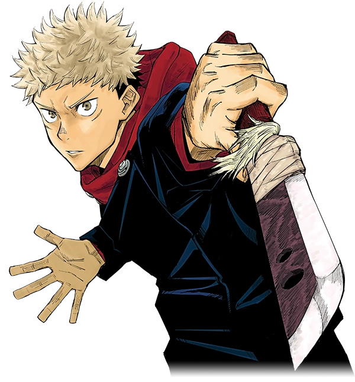
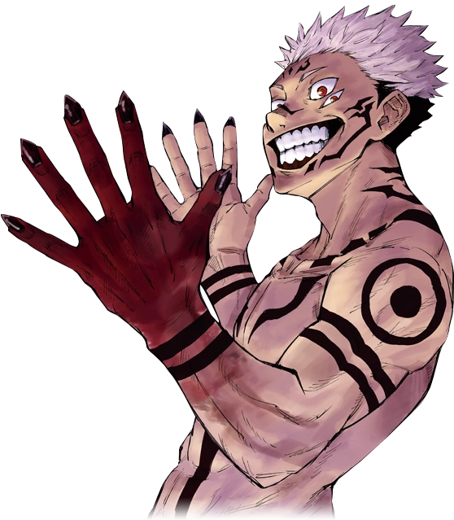
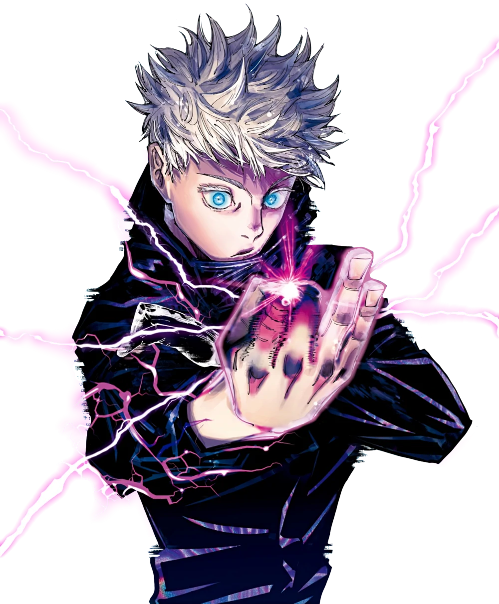
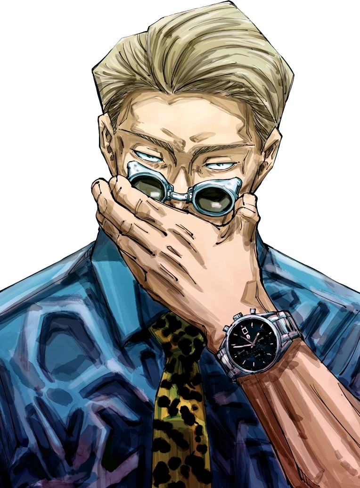
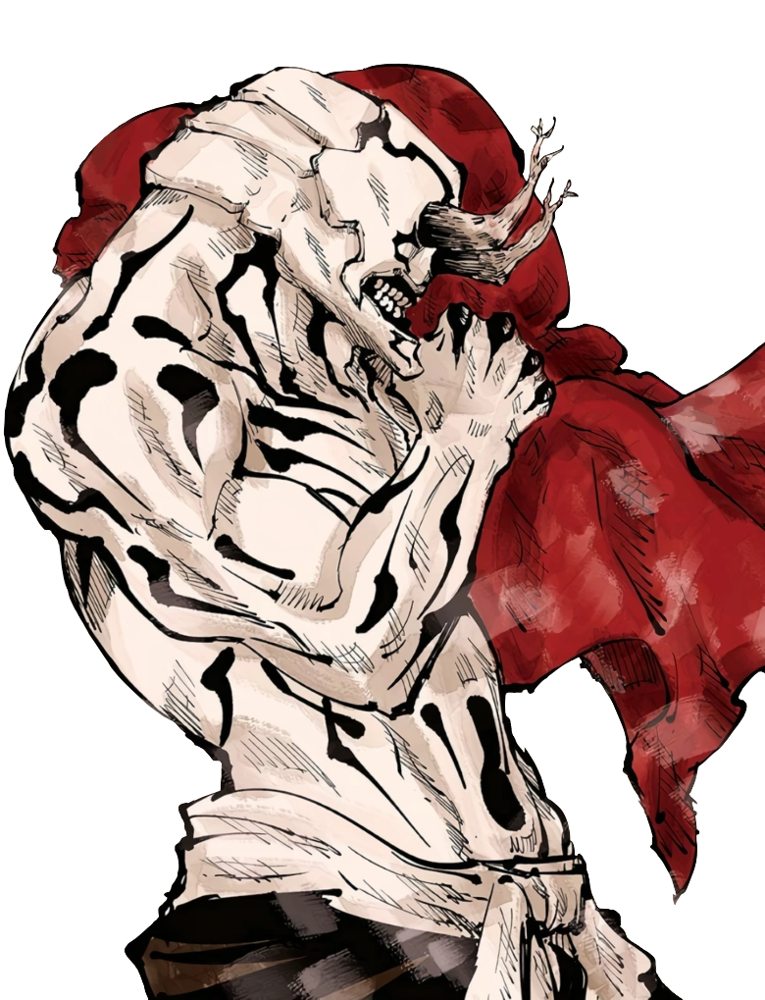

Yuji Itadori
#001

Status
- Força Sobre-Humana
- Velocidade e reflexos aprimorados
- Durabilidade Aprimorada
Habilidades
- Keitei Ken
- Kokusen
Sukuna
#002

Status
- Encarnação (Juniku)
- Metamorfose
- Força Imensa
- Grande Intelecto Tático
Habilidades
- Hanten Jutsushiki
- Fukuma Mizushi
Satoru Gojo
#003

Status
- Intelecto Tático
- Imensa velocidade e reflexos
- Mestre Combatente Corpo a Corpo
Habilidades
- Hanten Jutsushiki
- Muryōkūsho
- Mukagen
Kento Nanami
#004

Status
- Master Swordsman
- Grande Intelecto Tático
- Precisão e Técnica Superior
Habilidades
- Tookaku Juho
- Gargara
Hanami
#005

Status
- Presença Oculta
- Força Aprimorada
- Durabilidade Imensa
- Velocidade Aprimorada
Habilidades
- Ohanabatake
- Ryōiki Ten'en
- Noroi no Shushi
Yuta Okkotsu
#006

Status
- Especialista em Armas
- Combatente corpo a corpo experiente
- Força Aprimorada
Habilidades
- Rika
- Jugon
- Usurrabi